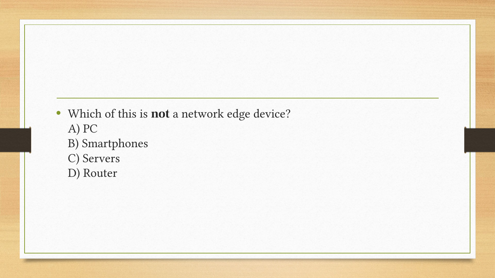
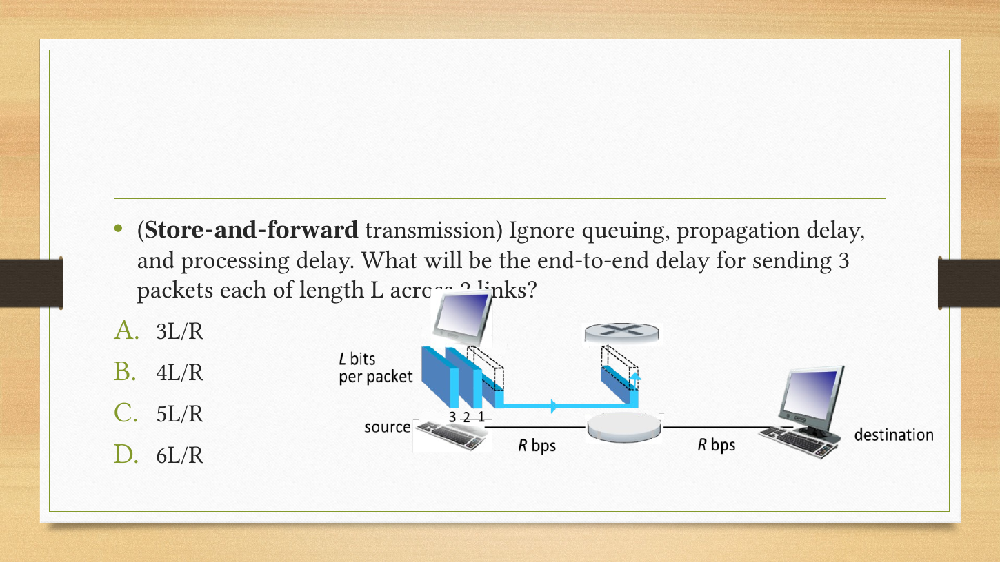
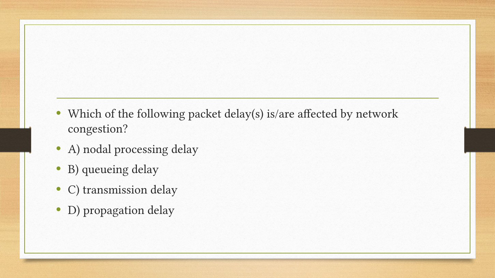
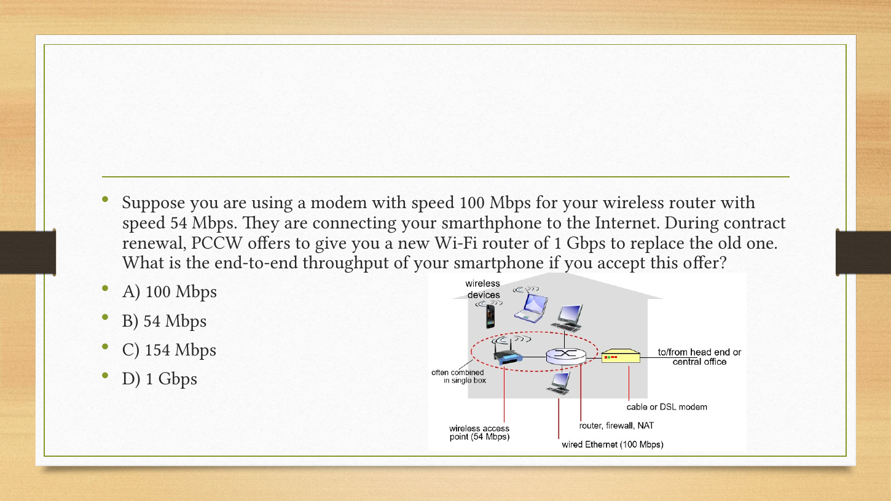
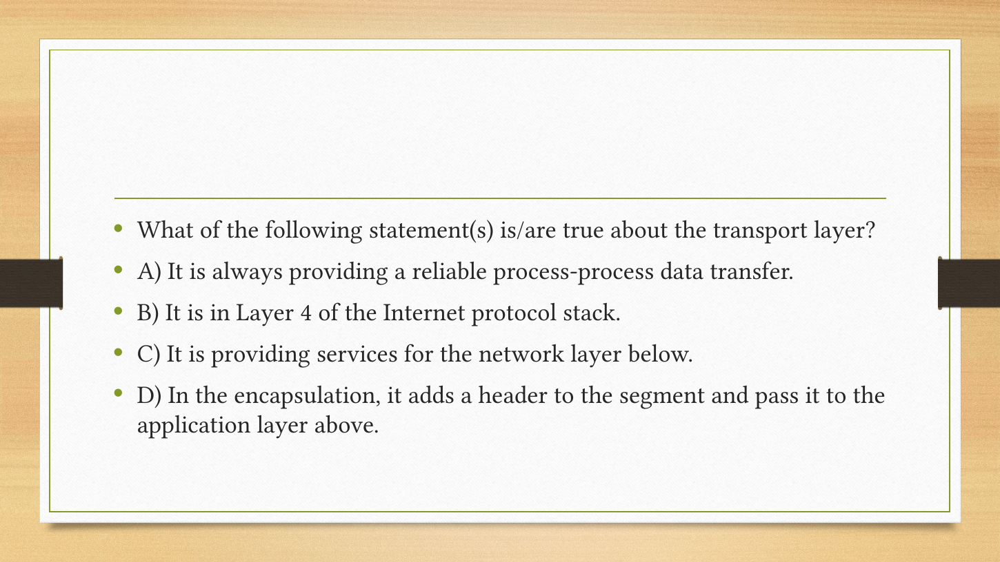

Chapter 1 · Introduction｜一条消息怎样穿过互联网
A4 打印版 · 第 2–18 页 图可点击放大。
课程目录 · Tutorial 1 · Tutorial 2 · Assignment 1 · 下一章
你在宿舍点开课程网页，屏幕很快显示内容。中间不是一条从电脑直达学校服务器的专属电线，而是许多设备、链路和网络共同协作。本章先建立这幅全景：谁负责收发、数据怎样共享道路、为什么会等待或丢失、复杂系统如何分工。后面每章会放大其中一部分。
依据当前 完整PPT（78页）及课堂Q&A（6页）。保留老师Chapter命名与顺序。原PPT说明其改编自 Kurose/Ross 教材课件、由 Man Hon Cheung 修改；原图版权属于原作者。本地学习解释与补充算例不冒充教师逐字讲稿。
基础复习（可跳过）： 先自查1500 B÷2 Mbps会不会算；若卡住读单位与时间轴。多人同时活跃的概率看组合概率。
- Chapter 1 · Introduction｜一条消息怎样穿过互联网
- 1. What is the Internet?｜先分清“设备视角”和“服务视角”
- 2. What is a protocol?｜格式、顺序、动作缺一不可
- 3. Network edge and access｜接入网把你带到第一个入口
- 4. Circuit versus packet switching｜预留座位，还是来了再排队
- 5. Forwarding, routing and a network of networks｜路口动作与整条路线
- 6. Delay and loss｜慢在哪一段，公式才选得对
- 7. Real delays and throughput｜测得的RTT不是某一条线的长度
- 8. Layers and encapsulation｜把一件复杂的事拆成清楚的职责
- 9. Security and history｜知道威胁，也知道哪些数字属于当年
- 10. Chapter 1 Q&A｜直接对照老师的五道课堂题
- 11. 回顾、任务与来源索引
| 主题 | 优先级 | 难度与卡点 | 掌握要求；依据 |
|---|---|---|---|
| Internet、protocol、edge/core | 核心必会 | 低至中；设备和功能 | 用英文解释与举例；P4–12、Q&A |
| 交换、复用、流水线 | 核心必会 | 中；容量与时序 | 画图、手算、说明假设；P20–32、T1、A1 |
| delay/loss/throughput | 核心必会 | 中；四类时延和瓶颈 | 带单位计算与解释观察；P43–55、T2、A1 |
| 协议分层与封装 | 核心必会 | 中；服务方向/数据路径 | 跟踪消息跨层变化；P56–65、Q&A |
| 接入、介质、ISP结构 | 常规掌握 | 中；共享与独占 | 比较基本机制；P11–19、33–42 |
| 安全概念与历史 | 常规掌握 | 低；定义/时代背景 | 识别威胁、解释演进；P66–78；未找到可据此判断“不考”的证据 |
优先级与难度独立。当前Tutorial、Assignment和课堂题是直接依据；历史复习笔记只作辅助，不按单次出现宣称香港本学期高频或QE范围。
1. What is the Internet?｜先分清“设备视角”和“服务视角”
P4的硬件视角（nuts and bolts）包含端系统hosts/end systems、链路links、分组交换设备packet switches，以及互联的ISP。主机运行网络应用，链路用铜缆、光纤或无线传播信号，交换设备把数据送到下一段。网络不是一个中心机器在替所有人转发。
看图从home network沿连接走到regional/global ISP，再到别的网络。手机、PC、服务器属于应用所在端系统；交换机和路由器服务中间转发。原P5的联网相框、冰箱等例子说明“host不等于台式电脑”。
服务视角（P7）则问应用能获得什么：程序通过接口请求把数据送到远端程序，好比寄件时按规则写地址、交给邮政系统。应用不必亲自安排沿途每一个路口；但选用的传输服务决定它获得哪些保证。RFC是互联网技术文档系列，IETF是重要标准组织（P6）；并非每一份RFC都是正式标准。
English takeaway: The Internet connects networks of hosts and packet switches, and provides communication services to applications through interfaces.
2. What is a protocol?｜格式、顺序、动作缺一不可
老师P8–9从问时间的对话引出协议（protocol）：约定交换消息的格式、顺序，以及发送/收到消息时的动作。只有“说英文”不够，还要知道先问还是先答、没收到怎么办。网络协议把这类约定变成机器可执行规则。
课堂图先TCP连接请求/响应，再HTTP请求/文件。它是教学时序，不意味着所有互联网应用都先用TCP；下一章会比较TCP与UDP。发送方与接收方遵守同一套约定，才能把字节解释成相同的内容。
自查 / Check: 协议是否只规定报文长什么样？ / Does a protocol specify only the format of a message?
答案 / Answer
不，还规定消息顺序和在发送/接收等事件发生时执行的动作。 / No; it also specifies message ordering and actions taken on relevant events.
3. Network edge and access｜接入网把你带到第一个入口
P11–19从端系统走向接入网：家庭接入、学校/公司接入、移动接入。每次比较都问两件事：速率多少（bit/s）？资源是共享还是专用？仅看到“带宽很大”还不能推断每个用户都能持续独占它。
DSL复用已有电话线，用频分让语音与数据占不同频段，经DSLAM汇聚到ISP；家庭用户到局端这一段专线不代表整个端到端路径都专用。家中的modem、路由/NAT、防火墙、Wi-Fi AP可以装在同一盒子里，但逻辑功能不同。
企业以太网把主机连到交换机，再由机构路由器连ISP。无线LAN经AP共享无线介质，蜂窝接入经运营商基站。课件列出的54Mbps、3G/4G等速率是原版本的示例，不作为2026年的产品上限或购买指标；标称速率也不同于应用可得吞吐。
| 介质（P17–19） | 信号怎样走 | 要理解的差别 |
|---|---|---|
| Twisted pair 双绞线 | 铜导线中的电信号 | 成本、距离、布线与干扰 |
| Coaxial cable 同轴 | 同轴导体 | 可承载多个频带；HFC结合光纤与同轴 |
| Fiber 光纤 | 光信号 | 高容量、抗电磁干扰；“每个光脉冲一个bit”是入门简化 |
| Radio 无线 | 电磁波传播 | 反射、遮挡、干扰，共享频谱 |
| Satellite 卫星链路 | 经卫星中继 | 传播距离与轨道决定时延；不能将一个示例时延套到所有轨道 |
English: Access capacity, sharing, and physical propagation are separate considerations. A dedicated access segment does not imply an end-to-end dedicated path.
4. Circuit versus packet switching｜预留座位，还是来了再排队
Circuit switching（电路交换）先预留路径上的资源，即使使用者暂时不发送，别人通常也不能借用这份预留。P22原图每条边有4条电路，一次连接在经过的每段占一份。FDM按频带分，TDM按重复时隙分；同一用户在不同链路使用哪一个编号电路不必相同。
Packet switching（分组交换）把应用消息拆成包，按需使用链路。一包发送时可用链路发送速率R，竞争者可能排队；这不表示每个并发用户都永久获得R。像食堂公共座位提高利用率，但午饭同时来的人多了还是要等，不能只记“共享比较好”。
Store-and-forward（存储转发）要求收完整个包再向下一跳发送。包长L bit、速率R bit/s，一跳发送耗时L/R。在忽略传播、排队、处理的P26模型中，一个包过两条链路耗时2L/R。注意“一跳”不自动包含整条路径。
三个包过两跳不是6L/R，因为后一包可在前一包进入第二链路时占用第一链路。完整时序见基础时间轴与Tutorial1 Q1。等长包、等速率、连续发送且没有额外时延时，P个包、N条链路总耗时 \((P+N-1)L/R\)。
共享带来的容量收益，有什么条件？
P29原例：1Mbps链路，每用户活跃时100kbps、活跃概率0.1。电路交换最多固定支持10人；35人做分组共享时，假设用户独立，活跃人数K服从Binomial(35,0.1)。
原页写“less than .0004”不够精确；独立模型重算约0.0004243，约0.04243%，是略大于0.0004。不能为了吻合课件四舍五入成一个方向错误的不等式。P30只有Binomial标题，补课给出从列举到公式的台阶。
这说明超额需求较少，不是保证零排队、零丢包或人人始终满速；短时到达突发、包调度和缓冲也影响等待。用户相关性改变时需要重新建模。分组交换适合突发需求，电路预留则提供更可预测资源，选择取决于服务需求。
5. Forwarding, routing and a network of networks｜路口动作与整条路线
P28的forwarding是当前设备查表，把到来的包从合适出口送走；routing是确定路径并形成所需转发信息的过程。导航规划与开到路口选出口的类比有帮助，但真实路由可能分布式更新，不必有一个中央导航员。
P33–42一步步构造互联网：若N个接入ISP两两直连，需N(N−1)/2条连接，扩展困难；可购买上游transit，也可用peering直接互联，经IXP交换流量，再加regional networks与content-provider networks。内容提供商将服务放近用户、建立自有网络，会减少对某些上游路径的依赖，并不是“绕过物理互联网瞬间送达”。原公司的例名保留为图中时代背景。
English: Forwarding is a local per-packet action; routing determines paths. The Internet consists of interconnected networks with both technical and economic relationships.
6. Delay and loss｜慢在哪一段，公式才选得对
P44–49区分四类时延：
| 项 | 发生什么 | 计算/影响 |
|---|---|---|
| Processing | 检错、读头、决定出口 | 题中给定或忽略 |
| Queueing | 等前面的包使用出口 | 取决于到达与队列状态 |
| Transmission | 将整包推入链路 | \(L/R\)；L bit、R bit/s |
| Propagation | 已进入介质的信号往前走 | \(d/s\)；d m、s m/s |
不要把发送和传播都叫“上网速度”。把水管出口加粗让整桶水更快倒完，不会按相同比例改变每个水分子沿长管移动的时间；类比到此为止，真实介质传播不是受排队的汽车行驶。
P47的车队原例：10辆车，每辆收费12秒，最后一辆过第一个收费亭需120秒；100km以100km/h行驶需1小时，全部在第二亭前到齐需62分钟。P48改为每车1分钟、车速1000km/h；首车1分钟后出发，再走6分钟，t=7分钟到第二亭，早于第10辆t=10分钟离开第一亭。两题都从第一辆开始服务计时，没让第二亭再处理一遍。
队列的traffic intensity为 \(\rho=La/R\)，a为平均包到达率（packets/s），L为本模型固定包长。rho接近1时在常见随机排队模型中等待显著增长；rho>1长期输入超过服务能力，无限缓冲理想模型不稳定，现实有限缓冲会丢包。仅平均rho<1不能保证任意流量下没有大突发或所有等待性质都良好，课件曲线是模型直觉。
独立变式 / Transfer: 一个包1000B，R=4Mbps，d=3000km，s=2×10⁸m/s，处理1ms、排队3ms，整包单跳耗时？ / Find the one-hop complete-packet delay under these conditions.
答案 / Answer
发送2ms、传播15ms，合计1+3+2+15=21ms。 / Transmission is 2 ms, propagation is 15 ms; total delay is 21 ms.
7. Real delays and throughput｜测得的RTT不是某一条线的长度
P50–51用traceroute逐渐增加TTL探查沿途响应，每行列出应答地址与往返时间RTT。后跳比前跳小并不矛盾：探测发生时间、排队、回程路径和应答处理可能不同；不能简单逐行相减当作单条链路时延。星号表示规定时间内未收到响应，不足以单独证明那台路由器坏了或一定被防火墙挡住。带日期的本机观察放在Tutorial2 Q5。
P52的丢包来自缓冲满等机制；包是否重传、由谁重传取决于协议，不是所有丢包都被网络自动恢复。吞吐throughput是单位时间实际交付多少bit，容量capacity是链路能力；应用有效载荷的goodput还会扣去协议与重传等开销。
简单持续流、无竞争时，多链路瓶颈近似 \(\min(R_s,R_c)\)；10条连接公平分享骨干R且其他条件简化时，每连接为 \(\min(R_s,R_c,R/10)\)。公平分享是题设，不是每个真实网络自动保证的定理。
自测 / Check: 接入10Mbps、服务器20Mbps、5条流公平共享30Mbps骨干，每流瓶颈吞吐？ / With these capacities and five fairly sharing flows, find the per-flow bottleneck throughput.
答案 / Answer
min(10,20,30/5)=6Mbps。 / 6 Mbps under the stated sharing model. 容量不要相加成60Mbps。
8. Layers and encapsulation｜把一件复杂的事拆成清楚的职责
老师P58–60用航空旅行：买票、托运行李、登机、起飞、航线各有职责。某一层使用下层服务，同时向上层提供服务；合理接口让内部变化不必牵动所有部分。网络分层的目的不是强行多造几个名词，而是明确责任与接口。
| Internet五层（从上向下） | 核心职责 | 课堂例子 |
|---|---|---|
| Application | 应用间协议与内容含义 | HTTP、SMTP、FTP |
| Transport | 进程到进程传输 | TCP、UDP；保证不同 |
| Network | 主机间数据报与路由 | IP |
| Link | 相邻节点间传输 | Ethernet、Wi-Fi |
| Physical | 介质上的比特信号 | 铜线/光/无线信号 |
从底向上编号时transport是第4层。OSI另列presentation/session，Internet应用仍可能需要编码、加密、会话等功能，只是不独立命名为这两层；“没有这一层”不等于“不需要这个功能”。
封装（encapsulation）将上一层信息作为本层payload，加上本层头部，某些链路协议还加尾部。应用message → 传输segment（TCP语境；UDP常叫datagram）→ IP datagram → link frame → bit。解封装按相反方向解释对应头部。
沿原图看：端系统走完整协议栈；典型转发路由器处理到网络层，以太交换机主要处理链路层。不要由这个教学模型推断所有现实设备绝不检查更高层。每跳链路帧可更换，应用消息不因此被每个路由器当成网页程序执行。
English: Each layer offers services to the layer above and uses services below. Encapsulation adds the information needed by the current layer.
9. Security and history｜知道威胁，也知道哪些数字属于当年
P67–71介绍恶意软件、DoS、嗅探与地址伪造。病毒常依附宿主内容并需执行，蠕虫可自动传播；并非“被动收到任意包就必然感染”，通常还需漏洞或执行机制。Botnet由受控设备组成，DDoS是分布式资源耗尽；packet sniffing能看到可访问的流量，但加密与网络结构限制能读到的明文。伪造源IP不等于已经能接收发回那个源地址的响应。这里学习机制与防护意识，不做攻击实验。
P73–77按时间讲分组交换研究、ARPANET、互联思想、TCP/IP与DNS、Web商业化、移动与云。应记住问题如何推动结构演变：让不同网络自治互联、尽力而为、分散控制；“stateless routers”在这里指不为每个端到端连接预留电路状态，不是路由器没有路由表或任何状态。
保留原页历史顺序，同时澄清两处可核查的简写：P74将ALOHAnet标为1970卫星网络；夏威夷大学记录其岛际packet-radio服务于1971年6月开始，卫星连接属于后续发展。UH项目史 P76的Mosaic年份应注意版本语境，NCSA记录其最早普及阶段在1993年。NCSA历史 两处查阅于2026-09-23。
P77的2016设备数量、早期社交网络用户数只作为课件当时背景，不称当前规模；“instantaneous”是宣传式简写，跨网络通信仍有非零时延。
10. Chapter 1 Q&A｜直接对照老师的五道课堂题
以下为原题条件的双语整理，答案为依据本章的推导，原Q&A文件没有附独立教师答案页。原图可在末尾展开。
- Which is not an edge device: PC, smartphone, server, router? / 哪个不属于本章端系统意义的网络边缘设备？ 答D，router；这里edge按运行应用的end systems定义，不否认现实术语也有“edge router”。 / D, a router, using the chapter's end-system definition of edge.
- Three L-bit packets cross two R-bit/s store-and-forward links. Ignore propagation, queueing and processing. Find completion time. / 3个等长包过2条等速存储转发链路，忽略其他时延，多久？ 答B，4L/R；流水线时间表见§4。 / B, 4L/R, because the links can work on different packets concurrently.
- Which delay is affected by congestion in the chapter's model? / 四项时延中哪项随拥塞变化？ 答B，queueing；其他给定包长/速率/距离条件不变。真实设备处理负载也可能变化，但原题考四类简化模型。 / B, queueing delay in the stated model.
- A 100Mbps modem connects a phone through a 54Mbps router, upgraded to 1Gbps. What is ideal throughput after upgrading? / 100Mbps外网口，54Mbps路由器换1Gbps后理想瓶颈？ 答A，min(100,1000)=100Mbps；还假设手机及其他段无更低瓶颈。 / A, 100 Mbps under the simplified bottleneck assumptions.
- Which transport-layer statements are true? / 传输层哪项正确？ A总可靠：错，UDP不保证；B是第4层：对（底层起数）；C为下方网络层提供服务：错，服务向上；D给segment加头再上送application：错，发送方向给应用消息加传输头后向下。 / Only B is correct under bottom-up layer numbering.
原Q&A页图 / Original question slides
    
11. 回顾、任务与来源索引
顺着主线复述：端系统产生消息 → 接入网进入互联网 → 分组在链路与交换设备间前进 → 共享导致排队/丢失，路径容量决定瓶颈 → 分层协议规定每一部分的格式与动作。接着做Tutorial1的交换与容量题、Tutorial2的时延与测量，再做Assignment1 P6/P31。
英文独立表达：Explain why increasing a link's rate does not reduce its propagation delay. / 解释为什么增加速率不减少传播时延。 要点：\(L/R\)改变，\(d/s\)由距离与传播速度决定。 / Link rate changes transmission time; propagation depends on distance and signal speed.
首轮可选 N015（分组交换）、N025（四类时延）、N033（流量强度）、N072（流水线），再在Markji按卡号复习。微课入口：NET02。
| 原完整PPT页码 | 本文位置 | 覆盖内容 |
|---|---|---|
| 1–3 | 开篇 | 来源、目标、路线；目录页不重复计主题 |
| 4–9 | §1–2 | 设备/服务/API/RFC、协议与原对话 |
| 10–19 | §3 | 接入、DSL、家庭/企业/无线、物理介质 |
| 20–28 | §4–5 | 电路、FDM/TDM、分组、存储转发、转发/路由 |
| 29–32 | §4 | 原35用户例、二项补足、交换比较 |
| 33–42 | §5 | ISP逐步构造、peering/IXP/内容网络 |
| 43–49 | §6 | 四类时延、两道车队题、rho |
| 50–55 | §7 | traceroute、丢包、吞吐、共享瓶颈 |
| 56–65 | §8 | 航空类比、五层/OSI、封装与名称 |
| 66–71 | §9 | 安全目标与四类威胁 |
| 72–78 | §9、§11 | 演进、时代数字、总结 |
| Q&A 1–6 | §10 | 标题及全部5道题 |
part1的49页对应完整1–49；part2的29页对应完整50–78，页码重编不算新增教学内容。逐页文本与内嵌图内容核对记录见本轮材料清单。源图与数字复算分别保留，不以截图代替解释。